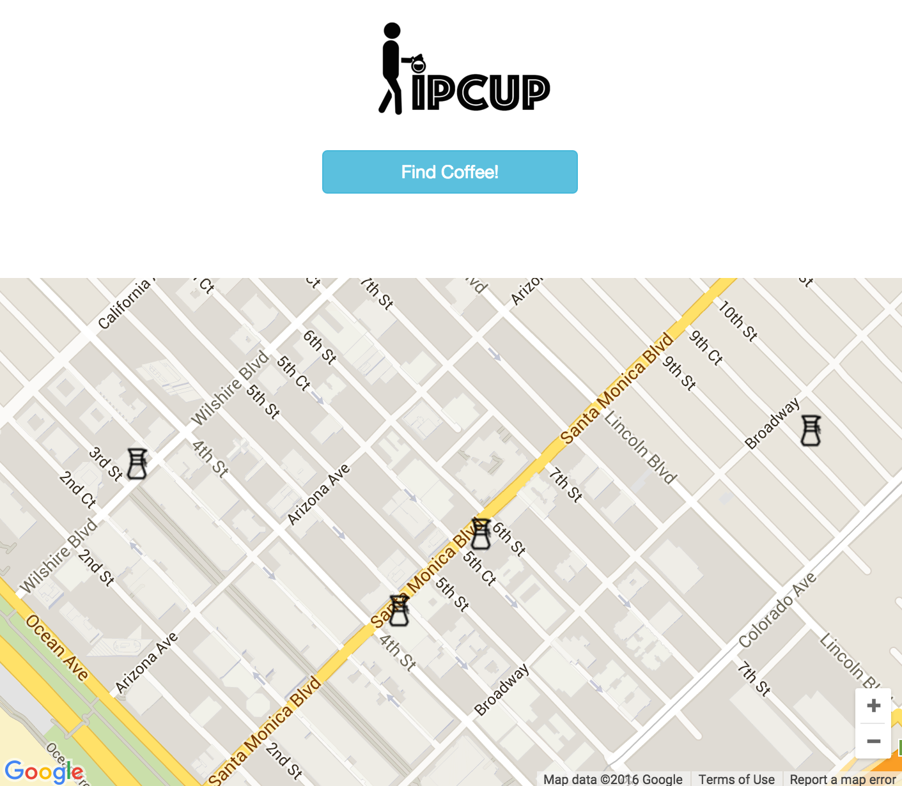
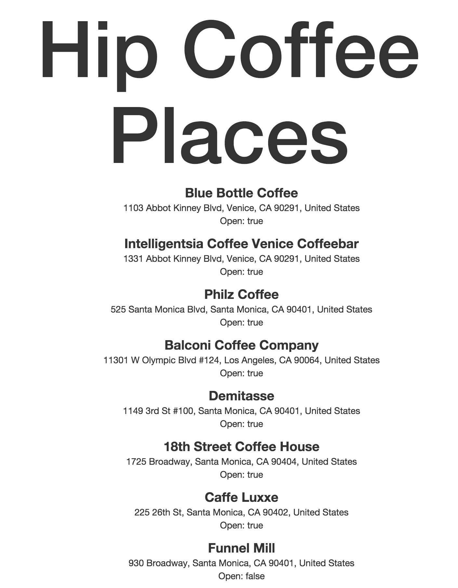

Hipcup: A new way to discover coffee
I've always had the idea to create an app whose premise it was to find coffee shops nearby, whether that be for a quick drop-in to grab a cup of coffee or a longer stay to study/read/code.
That sounds cool and all, but why don't you just Google a shop nearby?
That's a great question, so I'll start with this statement: I love coffee. And I just don't love any coffee. I can be pretty particular when it comes to the stuff, and sometimes (most times) Starbucks or Peet's just doesn't cut it.
So here's where Hipcup fills in that gap; Hipcup is a new way to discover non-chain coffee shops within a 2 kilometer radius of where you currently are extremely quick. No need to skip past the Starbucks or Coffee Bean & Tea Leaf Stores on the list because they won't even show up. Oh, and there's no need to type in your location; Hipcup takes care of that.
You can try Hipcup out HERE: https://hipcup.herokuapp.com/


Where does Hipcup go from here?
Given the time constraints for the project, I would've loved to implement the following (and hope to do so soon).
- Removal of the 'Find Coffee!' button and automatically generate the list of coffee shops nearby
- Highlighting of coffee shops on map when hovered on in generated list
- Icons or a way to decipher whether a coffee shop was still open or not
- More coffee shop details when selected
- Greater filtering capabilities of chain coffee shops
- Better overall UI/UX
- Implementation in React Native
If you would like to contribute to the project, please check out the repo on GitHub HERE and take a look at the documentation.
Tech Stack
This was my first experience building in React and using a compiler like Babel to write in ES6. Other than the initial startup time to setup my environment to use React and the troubles that come with it (check out my other blog post on how to start building in React), it was extremely exciting to utilize some of the latest technology available.
Below was the full stack used to create Hipcup:
- React
- ES6 / Babel
- Webpack
- Express
- Google Maps API
- Google Places API
- React-Bootstrap
- Heroku
If you're interested in seeing where I take this project, feel free to follow along HERE.
And finally, I'll leave you with a joke.
How did the hipster burn his tongue?
He drank his coffee before it was cool.